|
|
| fishes text index | photo index |
| Phylum Chordata > Subphylum Vertebrate > fishes > Family Antennariidae |
| Spotted-tail
frogfish Lophiocharon trisignatus Family Antennariidae updated Sep 2020 Where seen? This rotund fish with a woeful expression is hard to spot. It looks just like an algae-covered stone. Rather large, it is probably quite common but often overlooked. It is sometimes seen on some of our shores, near coral rubble and reefs as well as among rocks in deeper waters near seagrasses. One was seen 'climbing' among long Tape seagrass, clinging on with its 'paws'. Features: Those seen about 6-10cm long, can grow to 18cm. Distinguished by the pale translucent black-ringed spots on the tail fin. Body globular, colour is highly variable: usually mottled and matching the surroundings but also bright blue, orange, purple, green. Lacks scales and has a loose prickly skin instead. It waddles over the surface using its pectoral fins which have 'elbows' and ends in grasping 'paws' that can clutch bits of rubble. One was seen 'climbing' long seagrass with its 'paws'. It also has clasping pelvic fins on the underside of the body. Fishing with a lure: Like others in the family, it has a lure at the top of the head to attract prey within striking distance. We have observed one frogfish 'suck' small fishes into its huge mouth simply by opening it. The frogfish itself didn't move towards the prey! The capture is so rapid that it's over in a blink of an eye. Some have white markings on the inside of the mouth, perhaps this also lures prey to come closer? Sometimes mistaken for stonefish and scorpionfishes. Here's more on how to tell apart fishes that look like stones. |
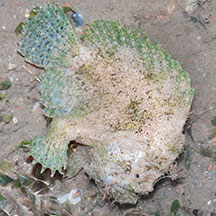 Changi, Jun 08 |
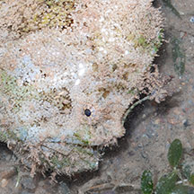 A lure that draws prey closer to the mouth |
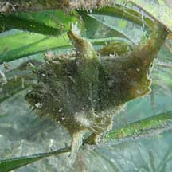 'Climbing' on Tape seagrass. Pulau Semakau, Apr 11 |
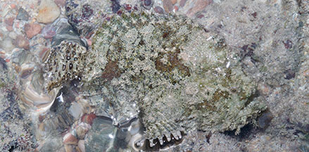 Labrador, Jul 05 |
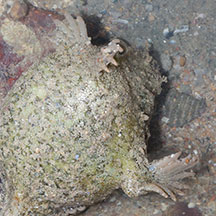 Clasping pelvic fins on the underside. |
| Frogfish Fathers: Lophiocharon species are known to brood and care for their eggs. It is believed that the female lays eggs directly onto the side of the male, the eggs attached by sticky threads. The father then look after the eggs by curling his body around the eggs, and folding his dorsal, caudal and pectoral fins over the egg mass to partially conceal them. One spotted-tail frogfish was seen to do that. According to FishBase the father fish carries egg clusters attached to the side of his body, "either as brooding strategy or as aid in luring other fish for food". Motionless, his eggs will indeed look like a tasty snack on a stone. Any potential egg-snackers will of course be in danger of becoming a snack for papa frogfish! |
*Species are difficult to positively identify without close examination.
On this website, they are grouped by external features for convenience of display.
| Spotted-tail frogfishes on Singapore shores |
On wildsingapore
flickr
|
| Other sightings on Singapore shores |
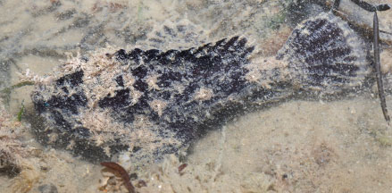 Changi Creek, Jul 23 |
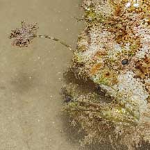 |
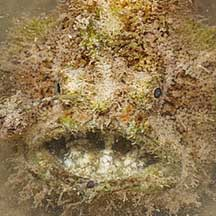 |
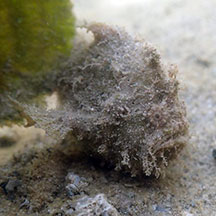 Pulau Hantu, Jul 20 Photo shared by Dayna Cheah on facebook.. |
||
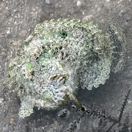 Pulau Semakau (South), Nov 24 Photo shared by Lon on facebook. |
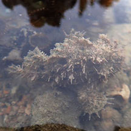 Terumbu Pempang Tengah, Jun 20 Photo shared by Kelvin Yong on facebook. |
| frog fish @ terumbu raya 09Feb2009 from SgBeachBum on Vimeo. |
| frogfish from SgBeachBum on Vimeo. |
Links
References
|